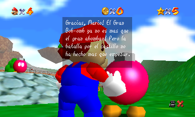
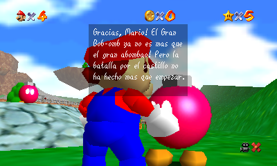

Información
Esta Version de Super Mario 64 fue Recompilada y Traducida al Español por RyanAg, pero el Repositorio del
Proyecto Original esta En este Enlace.
En esta Verion se Hizo lo Siguiente:
- Se Traducio Todos los Dialogos del Juego al Español.
- Se Cambio el Banner y el Icono Principal
- Esta Version es la Mas Estable sin Parches Extras.


 
